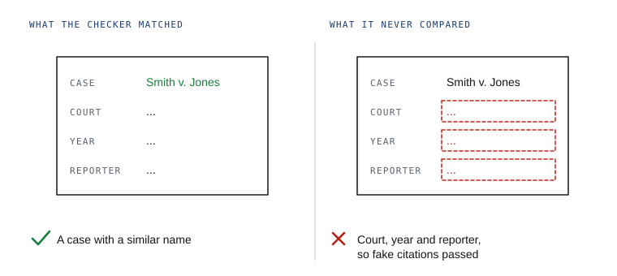

Legal: checking AI claims before you rely on them
For law firms and legal departments that use AI for research and drafting. The Casebook has 22 public cases from legal where an AI error caused harm.
What the AI did
What came of it
What kind of record backs each case
Each case is counted under the record behind it, because a court's finding and a settlement don't prove the same thing. The Casebook names no one and gives no dollar amounts. As of November 23, 2026.
- A finding
- A court, regulator or other official body found it.
- 19
- An admission
- The company, agency or person involved said so in public.
- 1
- A settlement
- The parties settled. A settlement isn't a finding of fault.
- 1
- A study
- A published study measured it.
- 1
Law firms and legal departments can already ask for the evidence
These are the rules and guidance a firm or legal department can point to when it asks an AI vendor for evidence.
- Lawyer duties. California's Rules of Professional Conduct set duties of competence, confidentiality, candor and supervision. The comment to Rule 1.1 says competence includes the benefits and risks of relevant technology.
- California State Bar guidance. Approved May 14, 2026, it replaces the 2023 version and covers AI agents. It says reasonable efforts to protect client data take more than relying on a vendor's general marketing assurances.
- ABA Formal Opinion 512. The ABA's July 2024 opinion says lawyers should review AI output to a degree that fits the tool and the task, and may consult a colleague or outside expert who has read and analyzed a tool's terms and policies. It is advisory.
- A bar's own purchase. The California State Bar's March 2026 request for proposals for bar exam services required third-party audits of information security at least every 12 months, and required vendors to disclose any AI use and use AI only with the Bar's express permission.
- Rule changes in progress. In June 2026 a State Bar committee approved modified proposals to amend six California rules for AI use, for a second round of public comment.
Where an outside check fits work you already do
- Before client data goes in. Make the vendor's evidence for each claim you'll rely on a required submittal, and have it examined before a pilot touches live matters. See the sample requirement.
- For a specific use. For research, discovery or contract review, the evidence to ask for follows the use: a lawyer-checked test set, the sources and versions tested, and the known limits.
- With outside counsel. An in-house team can ask outside firms for the same evidence on tools used on its matters.
You can start with a pilot: a first look at one AI product, for a fixed $9,000.
Sources
- California Rules of Professional Conduct (calbar.ca.gov)
- State Bar of California, Practical Guidance for the Use of Generative AI, 2026 (calbar.ca.gov)
- ABA Formal Opinion 512 (americanbar.org)
- State Bar of California, bar exam services RFP, March 2026 (calbar.ca.gov)
- State Bar of California, proposed rule amendments on AI (calbar.ca.gov)
What a check could look like in legal
Made up for this page. No real product or company. Each claim gets the same two findings, signed by the examiner and released by a second reviewer.
The claim
"Our research assistant never cites a case that doesn't exist."
Finding 1, how far the evidence reaches: Shown to be flawed. The vendor's checker counted a citation as real if any case with a similar name existed, without matching the court, year or reporter.
Finding 2, sound evidence the claim is false: Yes. The vendor's own logs include answers citing cases its checker marked as not found.

You can require an outside check
If your decision rests on what a vendor says its AI product does, you can make an outside check of that claim a condition of the purchase, the policy or the deal. The report comes only to you.
For buyers and public agencies · For insurers · How it works
Other industries
Government · Policing and courts · Schools · Healthcare · Insurance · Banking and markets · Transportation · Energy and industry · Construction · Hiring and work · News and publishing · AI labs · Software and agents · Customer service